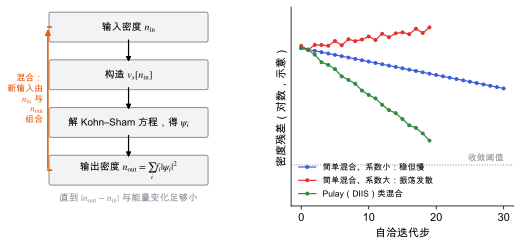

自洽场循环与密度混合
Kohn–Sham 方程为什么要迭代求解，密度混合怎样让迭代收敛，不收敛时该看什么。
直观阅读需要
- 不动点迭代
- Kohn–Sham 密度泛函理论：有效势依赖于密度
只是提示，不需要先读完才能往下看。
直觉直观解释
Kohn–Sham 有效势 v_s 依赖于密度 n，而密度又由解出的轨道决定（见 Kohn–Sham 密度泛函理论）。这是一个“先有鸡还是先有蛋”的问题，只能迭代：
- 猜一个输入密度 n_{\mathrm{in}}；
- 由它构造有效势 v_s[n_{\mathrm{in}}]；
- 解 KS 方程，得到轨道，再算出输出密度 n_{\mathrm{out}}；
- 如果 n_{\mathrm{out}} \approx n_{\mathrm{in}}，就自洽了；否则构造新的输入密度，回到第 2 步。
关键在第 4 步。直接用 n_{\mathrm{out}} 作为下一轮输入，常常会来回振荡甚至发散。所以要把新旧密度混合。

| 符号 | 是什么 | 图里对应 |
|---|---|---|
| n_{\mathrm{in}} | 本轮输入密度 | 流程图第一个框 |
| v_s | 由输入密度构造的有效势 | 第二个框 |
| n_{\mathrm{out}} | 解 KS 方程得到的输出密度 | 最后一个框 |
| \alpha | 线性混合系数 | 下图两条简单混合曲线的区别 |
| R | 残差 n_{\mathrm{out}}-n_{\mathrm{in}} 的大小 | 下图纵轴（对数） |
| 灰色虚线 | 收敛阈值 | 下图水平线 |
定义与公式数学与推导
电荷振荡 (charge sloshing)
长波长的密度变化 \delta n(\mathbf{G}) 引起的 Hartree 势变化正比于 \delta n(\mathbf{G})/|\mathbf{G}|^{2}。|\mathbf{G}| 越小（晶胞越大、越长），同样的密度误差引起越大的势误差，于是电荷在晶胞两端来回“晃动”。所以大晶胞、长晶胞和金属体系更难收敛。Kerker 预处理正是压低小 |\mathbf{G}| 分量的混合系数 [Kresse & Furthmüller 1996]。
在本研究线里的样子对应与边界
- 收敛判据
EDIFF：两步之间总能变化小于该值即停止。压电、介电和声子计算依赖精确的力和响应，通常要比结构优化更严格的EDIFF（见 收敛测试）。 - 离子步与电子步：结构优化每个离子步内都有一个 SCF 循环；上一步的波函数和密度作为下一步的初值，所以后面的离子步通常收敛更快。
- 分子晶体：是绝缘体，一般 SCF 收敛顺利。若出现振荡，先检查初始结构是否有异常短的原子距离，再考虑调整混合参数或换算法（
ALGO）。 - 有限电场或 Berry 相计算：迭代更敏感，常需要更多电子步（见 极化与 Berry 相）。
常见坑对应与边界
- 达到最大电子步数
NELM仍未收敛却没注意：VASP 会继续下一个离子步，得到的力不可靠。要检查 OSZICAR 中每个离子步的电子步数。 EDIFF太松导致力有噪声：有限差分算 Born 电荷、力常数时，噪声会被除以小位移放大。- 只盯总能：总能对密度误差是二阶的（变分性），收敛得最快；力和应力对误差是一阶的，需要更严的判据。
检验自己对应与边界
参考资料
论文Kresse & Furthmüller 1996
尚未实际查阅，目前只是拟查阅书目
论文Pulay 1980
尚未实际查阅，目前只是拟查阅书目
论文Payne et al. 1992
尚未实际查阅，目前只是拟查阅书目
分类电子结构理论 · 方法 · 状态：草稿